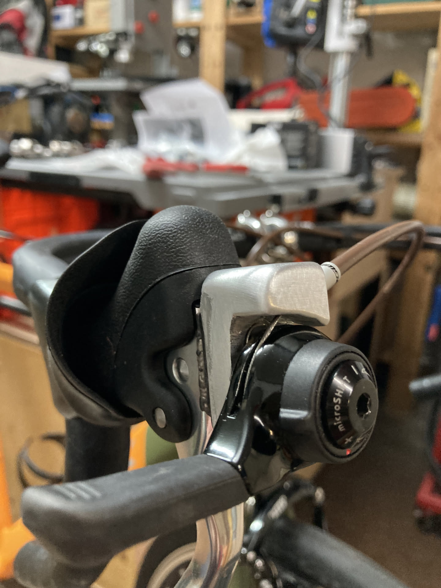
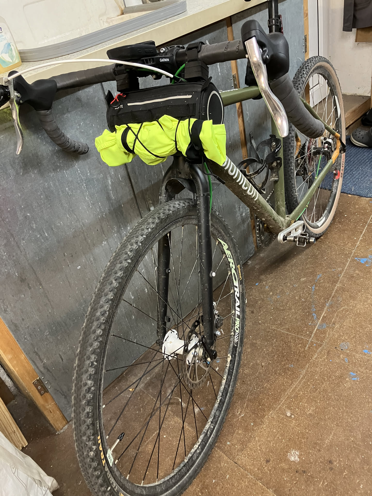
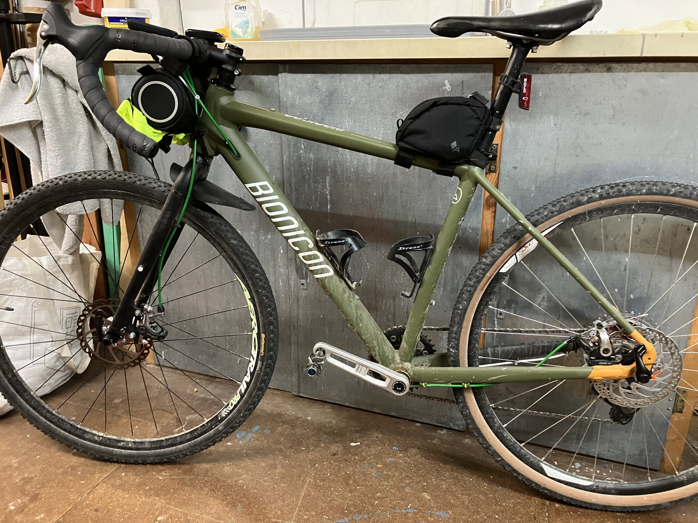

Um auch endlich ein halbwegs modernes Rahmendesign und Scheiben zu fahren, kam das bionicon bogan als Rahmen in die Sammlung. Und ja, gebraucht und neu lackiert; wie gehabt mit spray.bike, der bekannten pulverartigen Beschichtung/Sprühlack.
Eigentlich wollte ich die 105er Schaltung des trek weiter verwenden, aber es kam anders: gevenalle hat sog. shifter - hauptsächlich für den cyclocross-Bereich - als Schaltung im Sortiment. Aber hallo, ich habe doch auch die vom microshift rumliegen. Halt etwas Alu als Unterbau, eine Schraube und schon sind günstige Bremshebel zu hochwertigen Schaltungshebel mutiert.
Es ist weiterhin eine 11-40 Kassette und ein altes überholtes
SRAM-Schaltwerk samt Verlängerung verbaut. Funktioniert tadellos, auch mit
Steckachse. Vorne verrichtet nun eine trp spyre die Bremsarbeit, hinten die
baugleiche china Kopie zoom.
Als Kettenblatt die günstigen ovalen von deckas als 36T. Tretlager ist was
stabiles aus dem MTB-Bereich, dürften das saint von shimano sein.
Bei der Bereifung bleiben wir bei bekannten 3 fach gekreuzten 27,5"-Felgen samt 40er Conti terra trail und testweise wtb resolute.



wie man sieht: schwer im Gebrauch - sollte mal wieder gewaschen werden...
Brw: meine Ketten sind nun gewachst. Das Entfetten stellt die erste Hürde dar, man kann natürlich sündhaft teure Entfetter besorgen oder halt den Kram aus dem Küchenbereich: Bratpfannen-Entfetter - funktioniert tasächlich.
Das eigentliche Wachsen funktioniert wunderbar in einem Reiskocher! Mit Kerzenwachs, 1:10 Paraffinöl und 1:20 PTFE. Letzteres für die Geschmeidigkeit - muss aber nicht. Alles bei etwa 90°C für ca. 30min tauchen unter gelegentliches schwenken.